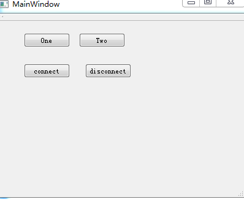

信號/插槽
qt 使用 信號/插槽 機制 處理gui
當 操作gui時 將 創建信號 與之關聯的 插槽 將被自動 調用
使用
QObject::connect(信號指針,
信號,
插槽對象指針,
插槽指針
)
關聯 信號 插槽
(或者使用 特定名稱 實現自動關聯)
example
class MainWindow : public QMainWindow
{
Q_OBJECT
public:
explicit MainWindow(QWidget *parent = 0);
~MainWindow();
//定義插槽
private slots:
void onButtonClicked();
private:
Ui::MainWindow *ui;
};
#endif // MAINWINDOW_H
MainWindow::MainWindow(QWidget *parent) :
QMainWindow(parent),
ui(new Ui::MainWindow)
{
ui->setupUi(this);
//關聯插槽
connect(ui->pushButton,&QPushButton::clicked,this,&MainWindow::onButtonClicked);
//connect(ui->pushButton,SIGNAL(clicked()),this,SLOT(onButtonClicked())); 舊版本qt4寫法 不要繼續使用
}
信號 插槽 管理
信號 插槽 可以多次 組合 只需要 調用 多次 QObject::connect 便可 QObject::disconnect 可以解除 信號 插槽 的關聯 其 參數和connect一樣 當 多個 信號 關聯到 同一 插槽時 在 調用 QObject * QObject::sender() const 可以 返回 發出信號的 指針
example
 *.h #ifndef MAINWINDOW_H #define MAINWINDOW_H #include <QMainWindow> namespace Ui { class MainWindow; } class MainWindow : public QMainWindow { Q_OBJECT public: explicit MainWindow(QWidget *parent = 0); ~MainWindow(); private slots: void onButtonWhoClicked(); void onButtonConnectClicked(); void onButtonDisconnectClicked(); private: Ui::MainWindow *ui; }; #endif // MAINWINDOW_H *.cpp #include "mainwindow.h" #include "ui_mainwindow.h" #include <QMessageBox> #include <QDebug> MainWindow::MainWindow(QWidget *parent) : QMainWindow(parent), ui(new Ui::MainWindow) { ui->setupUi(this); connect(ui->btnConnect,&QPushButton::clicked,this,&MainWindow::onButtonConnectClicked); connect(ui->btnDisconnect,&QPushButton::clicked,this,&MainWindow::onButtonDisconnectClicked); connect(ui->btnOne,&QPushButton::clicked,this,&MainWindow::onButtonWhoClicked); connect(ui->btnTwo,&QPushButton::clicked,this,&MainWindow::onButtonWhoClicked); } MainWindow::~MainWindow() { delete ui; } void MainWindow::onButtonWhoClicked() { qDebug()<<"obj name "<<sender()->objectName(); //btnOne|btnTwo qDebug()<<"is QPushButton's child "<<sender()->inherits("QPushButton"); QPushButton* p = qobject_cast<QPushButton*>(sender()); qDebug()<<"qobject_cast<QPushButton*> "<<(p!=nullptr); if(p == ui->btnOne) { QMessageBox::information(this,"test","this is one"); } else { QMessageBox::information(this,"test","this is two"); } } void MainWindow::onButtonConnectClicked() { connect(ui->btnOne,&QPushButton::clicked,this,&MainWindow::onButtonWhoClicked); connect(ui->btnTwo,&QPushButton::clicked,this,&MainWindow::onButtonWhoClicked); QMessageBox::information(this,"test","connect"); } void MainWindow::onButtonDisconnectClicked() { disconnect(ui->btnOne,&QPushButton::clicked,this,&MainWindow::onButtonWhoClicked); disconnect(ui->btnTwo,&QPushButton::clicked,this,&MainWindow::onButtonWhoClicked); QMessageBox::information(this,"test","disconnect"); }
注意
對 同一信號 關聯多次 同一 插槽 將 使插槽 多次被 調用 但 只需要 調用 一次 disconnect 就可 解除 多個關聯 信號 除了可以 管理到 插槽外 亦可以關聯到一個 匹配的 其他信號上 當本信號被觸發時 關聯的信號 亦將被觸發
自定義信號
要自定義一個 信號 只需要 在函數聲明前 加上 signals: 即可 在信號函數調用前 加上關鍵字 emit 即可將函數作為 信號發送
example
*.h #ifndef MAINWINDOW_H #define MAINWINDOW_H #include <QMainWindow> namespace Ui { class MainWindow; } class MainWindow : public QMainWindow { Q_OBJECT public: explicit MainWindow(QWidget *parent = 0); ~MainWindow(); signals: //自定義信號 void SendMySignals(); private slots: void onButtonClick(); void onMySlots(); private: Ui::MainWindow *ui; }; #endif // MAINWINDOW_H *.cpp #include "mainwindow.h" #include "ui_mainwindow.h" #include <QMessageBox> #include <QDebug> MainWindow::MainWindow(QWidget *parent) : QMainWindow(parent), ui(new Ui::MainWindow) { ui->setupUi(this); //connect(ui->pushButton,&QPushButton::clicked,this,&MainWindow::SendMySignals);//直接關聯 信號 connect(ui->pushButton,&QPushButton::clicked,this,&MainWindow::onButtonClick); connect(this,&MainWindow::SendMySignals,this,&MainWindow::onMySlots); } MainWindow::~MainWindow() { delete ui; } void MainWindow::onButtonClick() { //發送信號 emit SendMySignals(); } void MainWindow::onMySlots() { QMessageBox::information(this,"test","my"); }
注意
對於 信號 只需要寫聲明 不能實現 qt編譯前 會自動為其添加 實現代碼